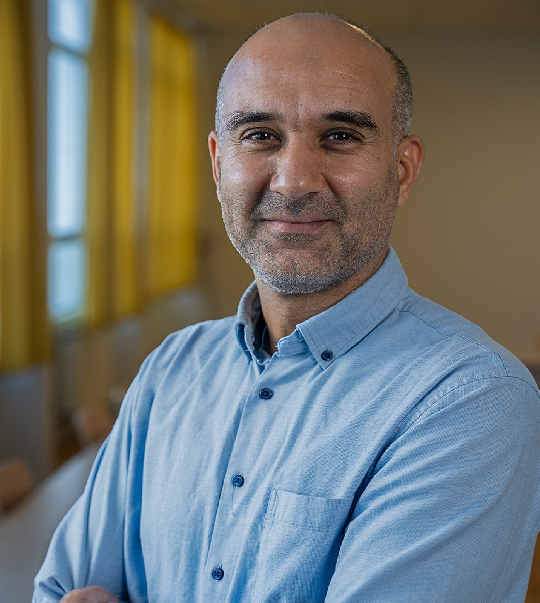

Specializing in applied econometrics, data modeling and statistical computing techniques.
Learn about my academic background and research interests
I am a Research Engineer at Université Paris Nanterre and EconomiX-CNRS. My research focuses on econometric methods with applications to economics and innovation studies.
I hold a PhD in Economics from Paris Dauphine University. My work emphasizes the development and application of econometrics methods to solve real-world economic problems, particularly in the areas of innovation, firm growth, and regional development.
I regularly present my research at international conferences and collaborate with researchers from various institutions.
Research Engineer, Université Paris Nanterre (2008-Present)
Research Fellow, EconomiX-CNRS (2010-Present)
Peer-reviewed journal articles and research outputs
Access my research materials and academic documents